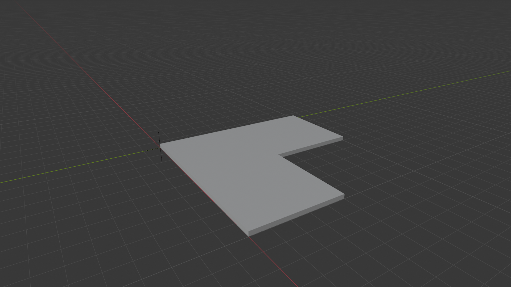
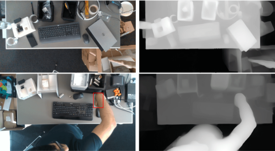

An open-source framework enabling large language models to create, edit, and query IFC building models through the Model Context Protocol. Combines predefined BIM tools with dynamic code generation using retrieval-augmented generation, allowing LLMs to perform complex architectural design tasks via natural language instructions without direct BIM software interaction.

Investigated multiple depth-aware fusion strategies (early, mid, and late fusion) integrated into transformer-based architectures (DETR, Deformable-DETR) for both image-level and video-level object detection. Evaluated on SUN RGB-D and custom video benchmarks, demonstrating improved robustness under occlusion, motion blur, and scene clutter compared to RGB-only baselines.